Sterling Configuration Guide
Introduction to Orchestration
This guide consists of the following sections
1. What is Orchestration
2. Orchestration Expressions
3. Which Orchestration would suit the Customer best
a. Let us take the example of a HR Customer
4. The various guides that are available to the Customer to Choose from
5. Conclusion
What is Orchestration
Orchestration is the automated configuration and coordination amongst applications. In a SCIM-to-SCIM Orchestration, the SCIM Gateway manages synchronous connections between the Source and the Target.
The SCIM Gateway translates identity management platform SCIM requests into REST-based API calls, SOAP/web services-based APIs calls, SQL commands, LDAP operations, robotic automation, SDK library calls, and queue messages across your entire IT infrastructure covering all the places where your users have accounts. The SCIM gateway creates, updates, deletes, or deactivates accounts from any application, database, directory, or device. Additionally, the gateway synchronizes passwords into your applications that use secure web authentication (SWA) or into your client's applications.
Orchestration Expressions
NAME : Provide a Name to the Orchestration
ORCHESTRATION TYPE : Choose the Orchestration Type, for Example, SCIMtoSCIM, Scheduled
SOURCE APPLICATION : References the source entry object
TARGET APPLICATION : References the dest entry object
ENT : The expression used to determine which target record matches a given source record.
SOURCE SCIM FILTER: Optional SCIM filter applied to source import.
CREATE CONDITION: Optional expression used to determine if a given user should be created.
UPDATE CONDITION: Optional expression used to determine if a given user should be updated.
MAP MANAGER: Select to map manager to target.
Which Orchestration would suit the Customer Best
Depending on the above Basic Details, the Customer can choose his Orchestration
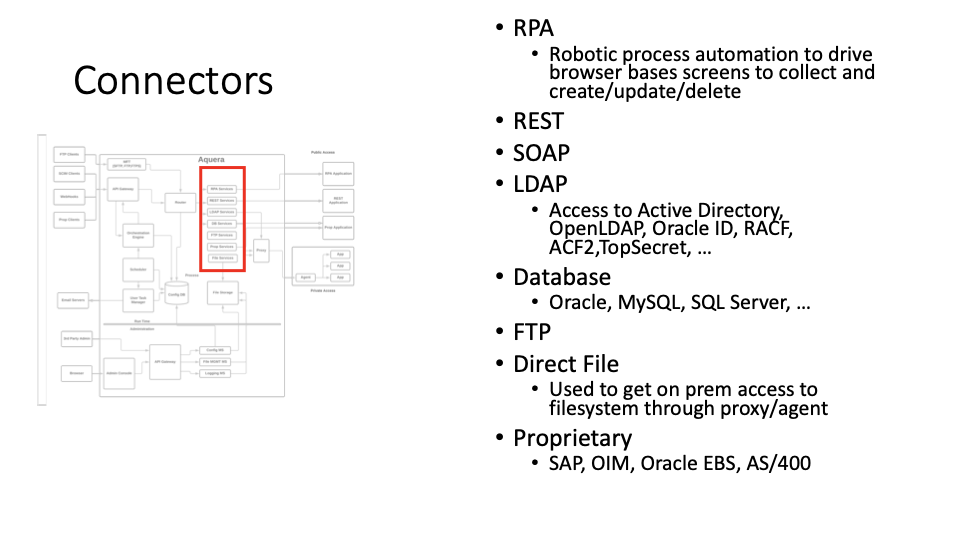
Let us take the example of an HR Customer
The Various Guides available to the Customer
https://support.aquera.com/hc/en-us/articles/360053435354-Orchestration-Architecture
https://support.aquera.com/hc/en-us/articles/360050872634-BambooHR-Event-Listener-Orchestration
https://support.aquera.com/hc/en-us/articles/360052280033-Custom-Script
https://support.aquera.com/hc/en-us/articles/360038683614-HR-Onboarding-Bridge
https://support.aquera.com/hc/en-us/articles/360051947933-Orchestration-Guide-Attribute-Mapping-
https://support.aquera.com/hc/en-us/articles/360052809113-Orchestration-Guide-Group-Rules-Schedule-
https://support.aquera.com/hc/en-us/articles/360051052493-Orchestration-Guide-Tables
https://support.aquera.com/hc/en-us/articles/360050874454-PingOne-Message-Listener-Orchestration-
https://support.aquera.com/hc/en-us/articles/360048959694-Provisioning-TigerConnect-from-Okta
https://support.aquera.com/hc/en-us/articles/360053995113-SCIM-to-SCIM-Orchestration-Expressions
Conclusion
Aquera connectors are broad and flexible, syncing any attribute, provisioning of attribute subsets, orchestrating asset cleanup on deprovisioning, and using robotic automation when APIs and database access are not available.
Orchestration Architecture
This guide consists of the following sections
1. SCIM-to-SCIM Orchestration
2. How Orchestration Processes work in general
a. ADP Workforce Now to Active Directory Orchestration
b. Source Configuration
c. Target Configuration
d. Orchestration Parameters
2. To Run the Orchestration
3. Different Types of Orchestrations
a. Event based
b. Schedule based
4. How to View Logs for Orchestration
5. The Functionality of the various Orchestration Tabs
a. Configuration
b. Attribute Map
c. Tables
d. Group Rules
e. Schedule
6. Conclusion
SCIM-to-SCIM Orchestration
Orchestration is the automated configuration and coordination amongst applications. In a SCIM-to-SCIM Orchestration, the SCIM gateway manages synchronous connections between the Source and the Target.
You can Add an Orchestration between two Application Endpoints (ADP WorkforceNow and Active Directory)
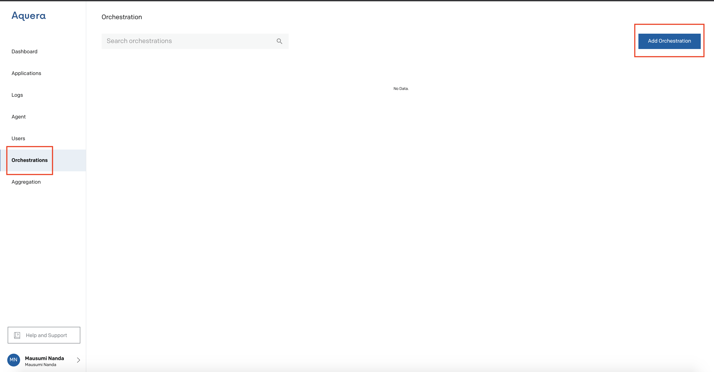
The entire Orchestration process is described in the next section
How Orchestration Processes work in general
To Create - ADP Workforce Now to Active Directory Orchestration
Create the 2 entries- ADP Workforce Now and Active Directory
Click on Orchestration menu

Enter a name to the Orchestration - ADP to AD
Apply SCIMToSCIM
Select Source (ADP) and Target (AD)
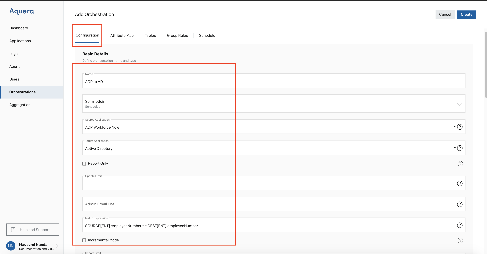
-
Report Only - Checkbox is left unchecked.
- When selected, a report is generated which shows what would be changed without actually making the changes.
-
Update Limit - Unlimited.
- The maximum number of records to update in a single run. Click on Save Changes
-
Termination Delay - Unlimited.
- The number of days to wait after a record has been deactivated before deleting the associated target record.
-
Match Expression - [ENT].employeeNumber.
- Expression used to determine which target record matches a given source record.
Then, Click on Create.
Orchestration is successful between ADP as Source and AD as target

Then Click on ADP to AD Orchestration
Goto Attribute Map

Map the Source to Target. The Source is prepopulated. The target is client-specific.
Then Save Changes
Source Configuration
ADP Workforce Now (ADP)
On the Add Application page, you will see the following fields:
- Display Name: Enter the display name for the application.
- Description: Enter a description for the application.
- Pick your Protocol: Displays the protocol as SCIM.
- Copy this URL: Displays the URL. This URL is required to configure ADP WorkForceNow on an Identity Service Provider.
-
Aquera Tenant Attributes:
- MakeActiveXDaysBeforeHireDate is set to the number of days.
- DeactivationTimeForXEmployee and ActivationTimeForNewEmployee are set to Time and Time Zone format where the time is in the Hours:Minutes:Seconds format and TimeZone can be for example -08:00 which is Pacific Standard Time. The timezone component is optional.
- Populate Photos checkbox is checked. When the checkbox is checked, the photos are retrieved.
- Ignore Users without Work Email (set active false)- By Default, this Checkbox is left unchecked
- Authentication: Bearer Token is used
- Schema: The Users table is populated
Click on Create, to Add the ADP WorkForceNow Application.
Aquera Tenant Attributes
These are the Aquera tenant Attributes
- MakeActiveXDaysBeforeHireDate is the Aquera tenant Attribute where the employer activates a new employee account for a specified number of days before the actual hiring begins.
- DeactivationTimeForXEmployee is the Aquera Tenant Attribute where the employer can specify the exact time on the date of termination, after which the employee status will be terminated.
- ActivationTimeForNewEmployee is the Aquera Tenant Attribute where the employer can specify the exact time on the date of hire, after which the employee status will be active.
- Populate Photos when the checkbox is checked, the photos are retrieved.
- Ignore Users without Work Email (set active false) by default this checkbox is left unchecked.
MakeActiveXDaysBeforeHireDate is set to a number of days.
DeactivationTimeForXEmployee and ActivationTimeForNewEmployee are also set in a similar manner. Time and Time Zone format where Time is in the Hours:Minutes:Seconds format and TimeZone is in Pacific Standard Time. For example it is set to 12:30:00-08.00
Target Configuration
On the Add Application page, you will see the following fields:
- Display Name: Enter the display name for the application.
- Description: Enter a description for the application.
- Pick your Protocol: Select the protocol as SCIM, this will populate the fields in the Schema accordingly.
- Copy this URL: Copy the URL and paste it at the time of provisioning in the Identity Service Provider.
- Tenant: This is your Active Directory server. It should be specified as name:port. Name can be an IP address or it can be a fully qualified DNS name that is reachable from Aquera Cloud. Port is typically 636 when using encryption (LDAPS), or 389 for clear text.
- Connection: The Connection may be Direct or Aquera Agent
- Aquera Tenant Attributes: The various Aquera Tenant Attributes are CN=Users, DC=aquera and DC=com
- Connect with Idaps: This checkbox is Checked by Default.
- Authentication: To support AD updates, specify credentials for an account with Domain Admin privileges. To support only imports from AD (read only), specify credentials for a normal user account.
- Schema: Schema consists of the SCIM Attributes and the Custom Attributes of Users and SCIM Attributes of Groups.
Click on Create, to Add Active Directory Application.
Tenant
This is your Active Directory server. It should be specified as name:port. Name can be an IP address or it can be a fully qualified DNS name that is reachable from Aquera Cloud. Port is typically 636 when using encryption (LDAPS), or 389 for clear text.
Authentication
To support AD updates, specify credentials for an account with Domain Admin privileges. To support only imports from AD (read only), specify credentials for a normal user account.
Orchestration Parameters
Source SCIM
This parameter to the orchestration defines the SOURCE system
This source must be configured as ADP in the applications list for your tenant.
Target SCIM
This parameter to the orchestration defines the DESTINATION system
This destination must be configured as Active Directory in the applications list for your tenant.
Report Only
This parameter when true directs the orchestration to run in read-only mode.
A report is generated that can be examined to ensure that the users will be created/updated/deleted in the Active Directory.
Mapper
This parameter is used to create a map of the user in Active Directory from expressions from ADP. These expressions allow you to specify how each attribute will be populated.
The Mapper is Client Dependent and varies from Connector to Connector.
Group Management
if the group expression is undefined then the group list will not be modified during the PUT or POST.
If you would like to remove a user from all of their groups then the expression must evaluate to the empty list [].
The managed group list provides a list of groups that the Orchestration will manage.
Only these groups will be modified by the orchestration.
This allows the target to have groups that are managed in the target, for example, Active Directory security groups managed by Active Directory and groups managed by the orchestration.
The list of groups will be the displayName of each group.
The groupDisplays must be unique in the target directory.
If the group name is redundant in the target then that group cannot be managed as the orchestration will not know which group of the two to add the user.
Email Templates
The email templates allow for the customization of email messages that are sent to the manager and/or administrator.
These templates allow for substitution of attribute values of the corresponding user in the email message itself by utilizing {{attribute_name}}.
To Run the Orchestration
The Orchestration may be executed or killed once created.
To Run the Orchestration, Click on Execute

Types of Orchestration
Event
Event Listener is a type of orchestration that enables Users to get updated information in all the destination channels by making the changes at the source channel alone.
By using this type of orchestration, Users need not spend time updating all the channels, time and again. The frequency with which the data to be updated is automated and the orchestration is just a one-time exercise.
Click on Orchestration -> Add Orchestration

Enter a Name for the Orchestration (here it is ADP to AD)
You get the following screen
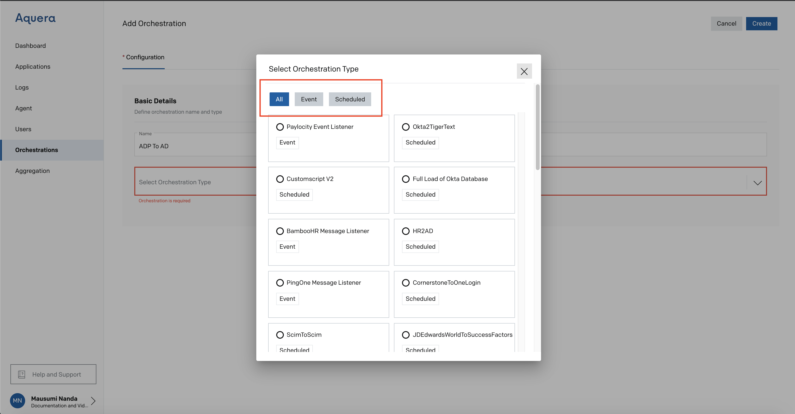
The Event-based Orchestrations are shown below
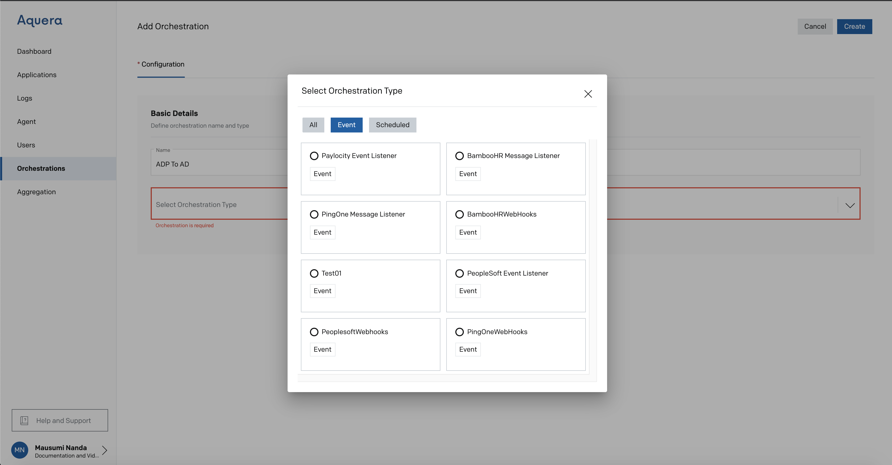
Scheduled
The Scheduled based Orchestrations are as follows

ADP to AD is a Scheduled Based Orchestration
How to View Logs for Orchestration
Goto Logs -> Orchestration
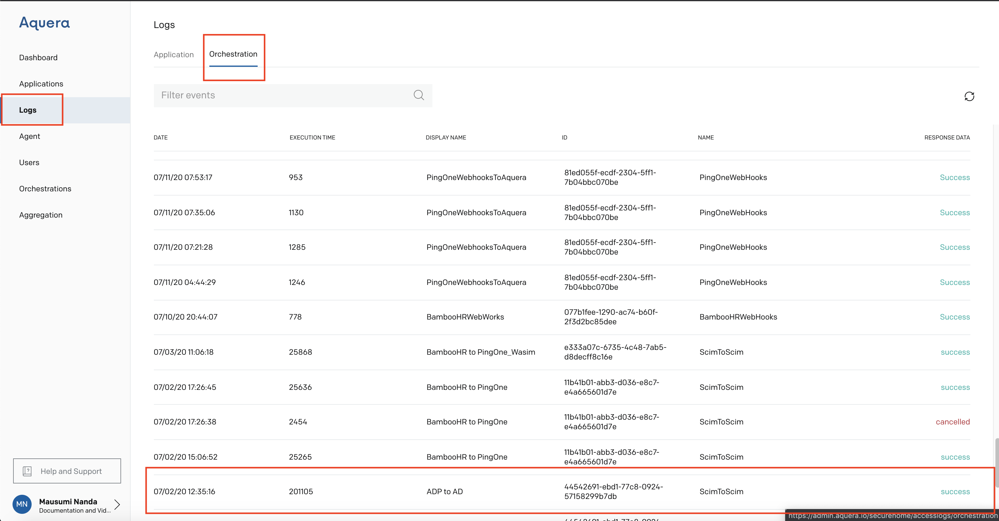
The Orchestration shows a Success Status
The functionality of the various Orchestration tabs
Configuration
Basic Details
Defines the Orchestration Name and type

Creation E-Mail Details
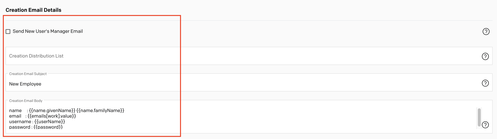
Deactivation E-Mail Details
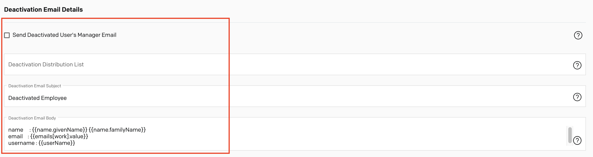
Advanced Details

Attribute Mapping
Please enter an userID to Preview their mappings

Enter a valid userID from the ADP Application (Data Section), for example G3YHTE09WQRQZRGW (Please follow the next section for pulling the data from the ADP application)
 Then Click Search
Then Click Search
You get a Preview Button
Please turn it On
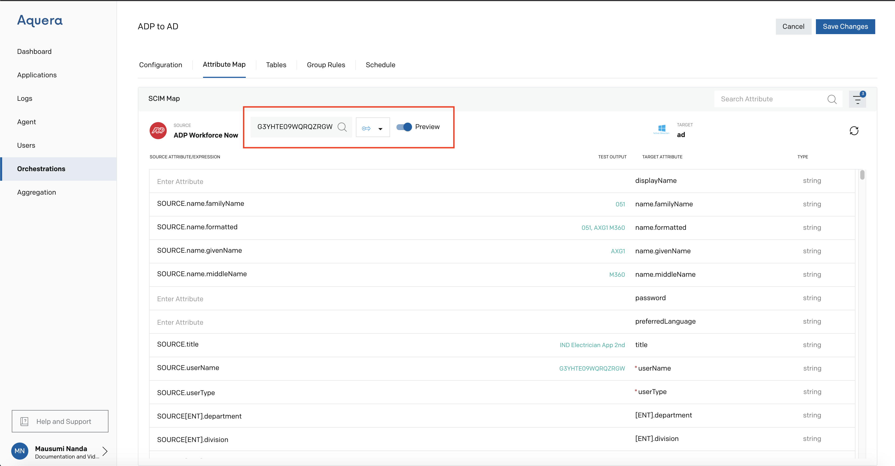
 Click on the dropdown next to the Arrow mark
Click on the dropdown next to the Arrow mark

Then Click on Create
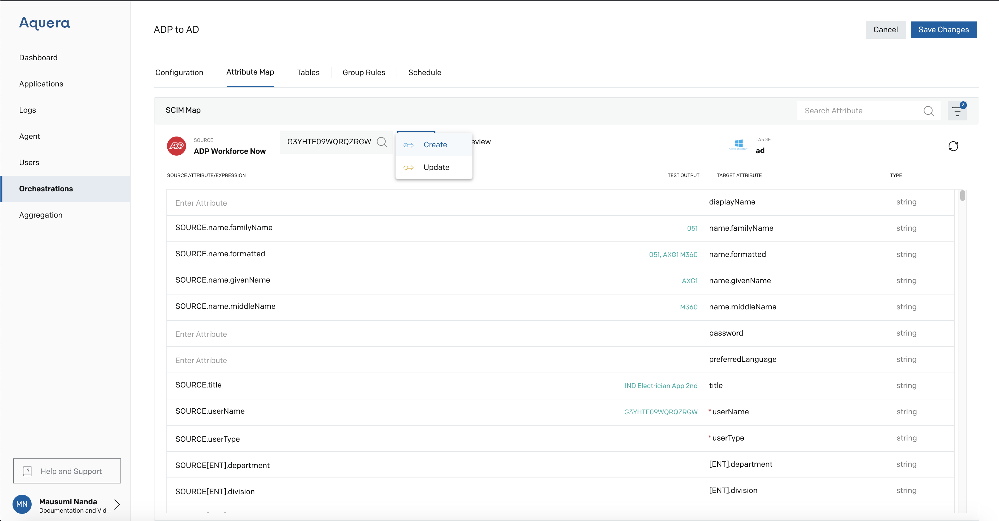
Then Click Save Changes
The ADP to AD Attribute mapping is Successful
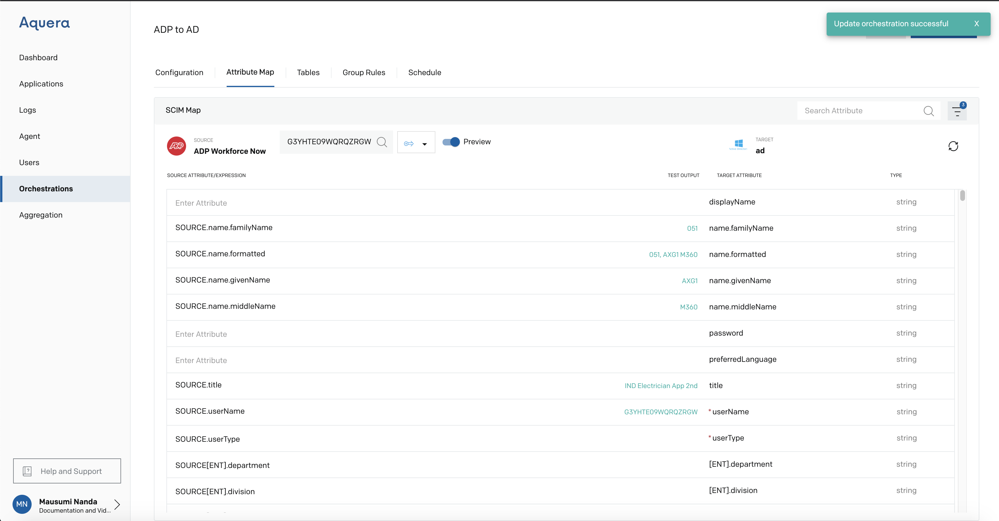
Steps to pull the Data from the ADP Application
Goto ADP Application that you created prior to the Orchestration
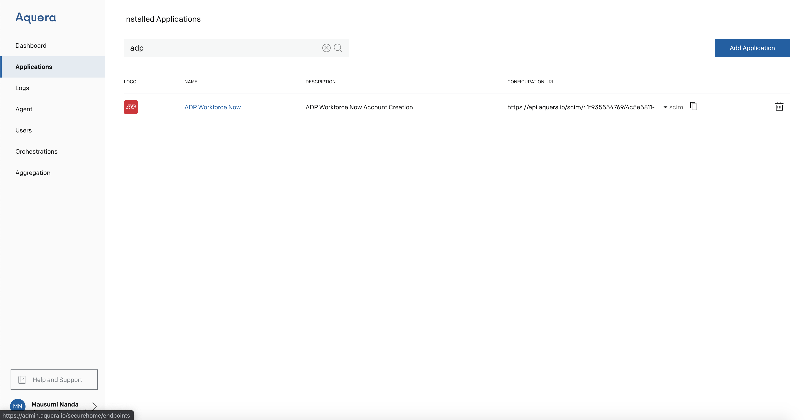
Goto the Data Tab

Copy the Field for userID (marked as True)

Use this userID in the above section
Tables
User needs to go Orchestration and Select the Orchestration concerned, Click on Tables and then Add Table.
The table inputs can be entered either manually or in the form of uploading a file. To enter manually, Users can Click on 'Add Row' and enter the Name and Values. Once it is completed, click on 'Add'.

Then Click on Add

Click on the Edit Button
Then Add Row
Enter a Name and Value
Then Click Update

Then Save Changes
To use this Table in Orchestration
Goto Attribute Map
The Name here is Table1 and the Value is Title
Take the UserId G3YHTE09WQRQZRGW from the ADP Application
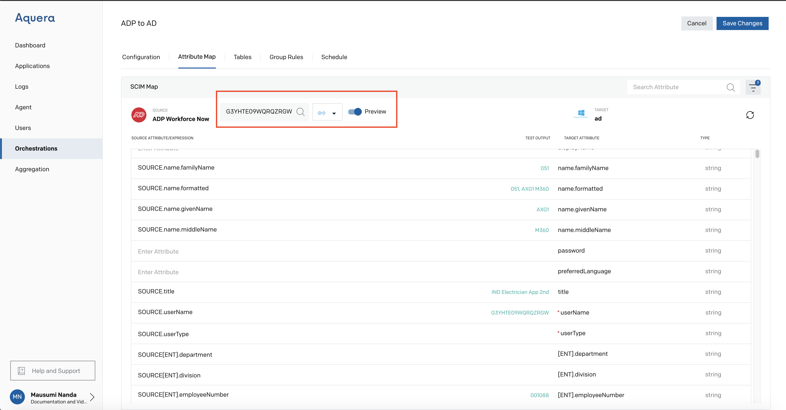
Click on Preview

Click on Create
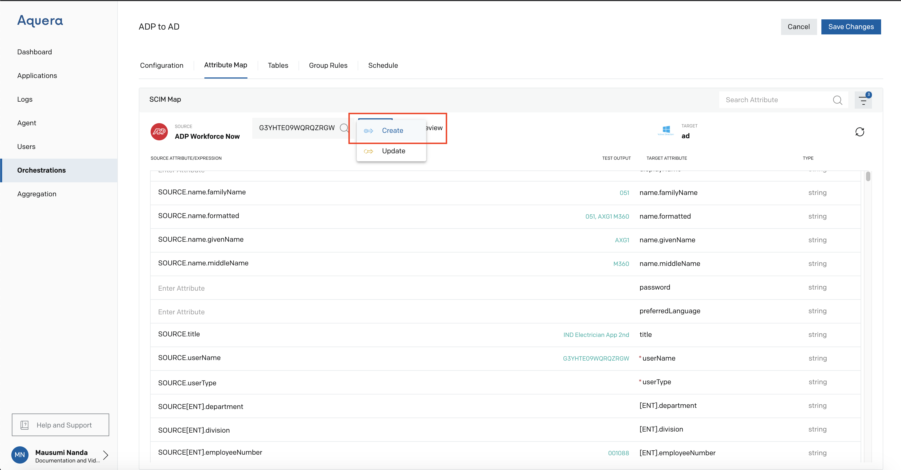
The Title is Displayed

Save the Orchestration
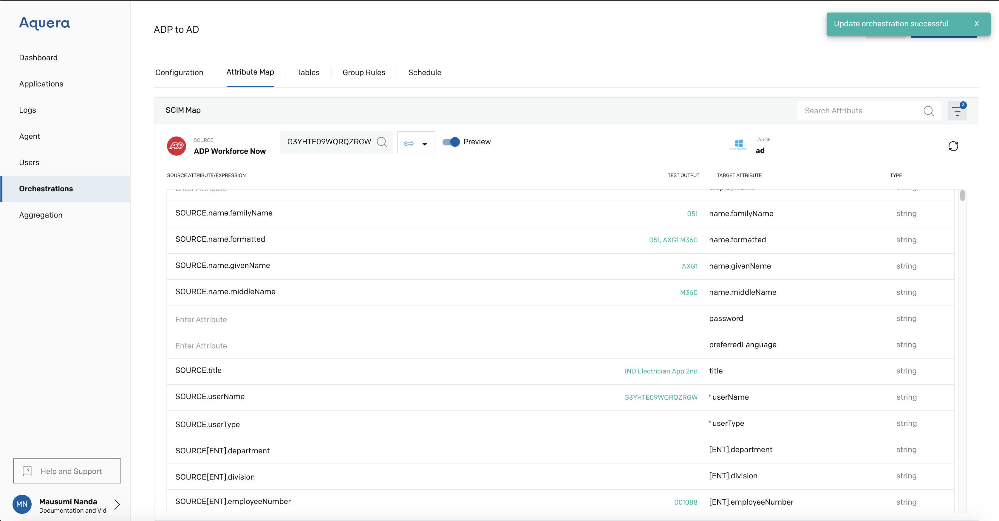
Group Rules
When the user checked Enable Group Management checkbox in the Configuration section, Group Rules can be formed for the group being created.
Users can define their own rules for the groups with regard to updating the data.
If the user enabled the Group Management but not framed any Group Rules, the changes made at the source will automatically get reflected at the target.
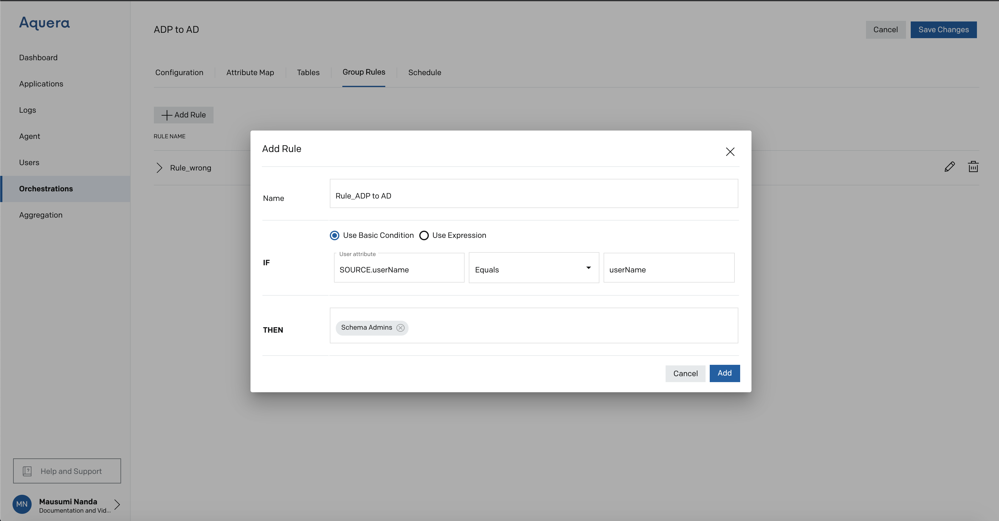
The Group Rules Expression can utilize any valid Javascript syntax for determining if a user is in a group.
Schedule
Once the orchestration is completed, updates reflecting the changes made at the source in the target can be automated.
Users can select a schedule for the data refresh from the time slots given under 'Schedule'. If there are no data changes, the user can opt for Never.
Depending on the frequency with which the data changes are made, the automation can be done from once every 20 minutes to once in 2 hours.

After selecting the frequency and saving the changes, the data updates will be done in a scheduled manner.
Conclusion
Orchestration goes a long way in reaffirming our faith in our goal of a sustained SCIM automation infrastructure
ADP to Okta Mapping of Attributes for Orchestration
Here the source is ADP and the Target is Okta for the process of Orchestration
Create Orchestration
Goto Aquera Admin Page
Click on Add Orchestration
Enter a name for the Orchestration and Select the Orchestration Type (ScimtoScim)

Enter the Source Application as ADP
Enter the Target Application as Okta
You get the following Screen
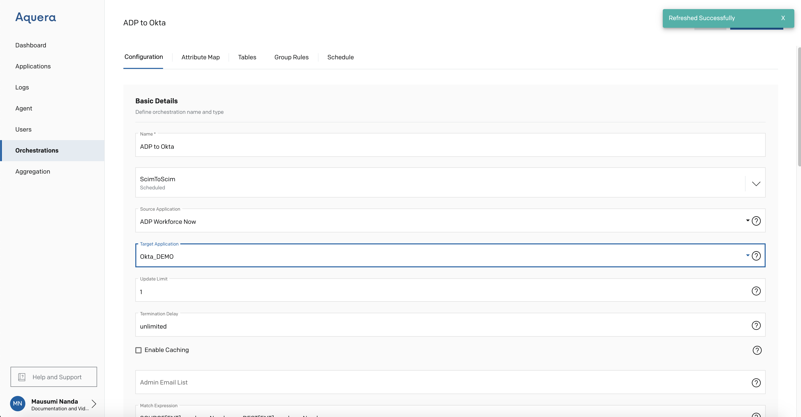
The Orchestration from ADP to Okta is Successfully Created
Attribute Mapping
Please enter an userID to Preview their mappings
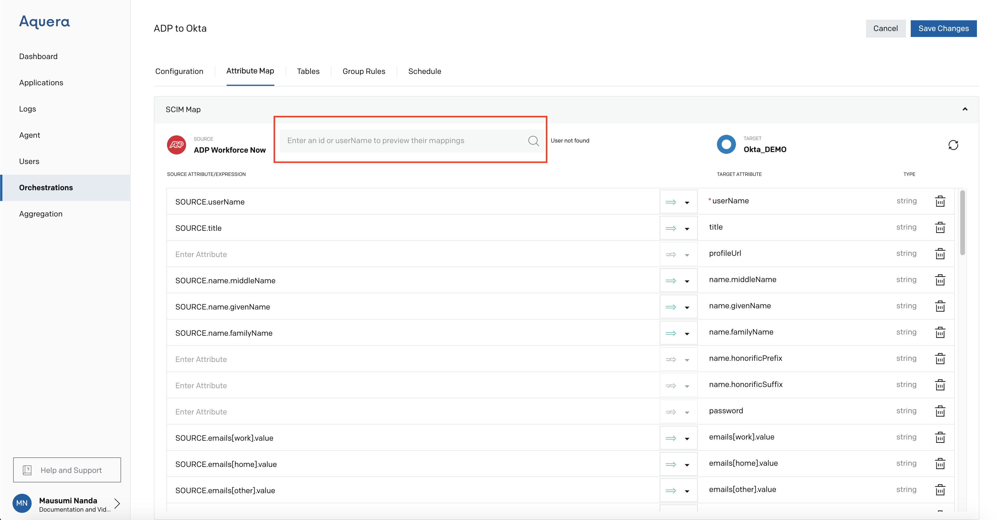
Enter a valid userID from the ADP Application (Data Section), for example G3YHTE09WQRQZRGW (Please follow the next section for pulling the data from the ADP application)

Then Click Search

You get a Preview Button
Please turn it On

Mappings Preview is shown
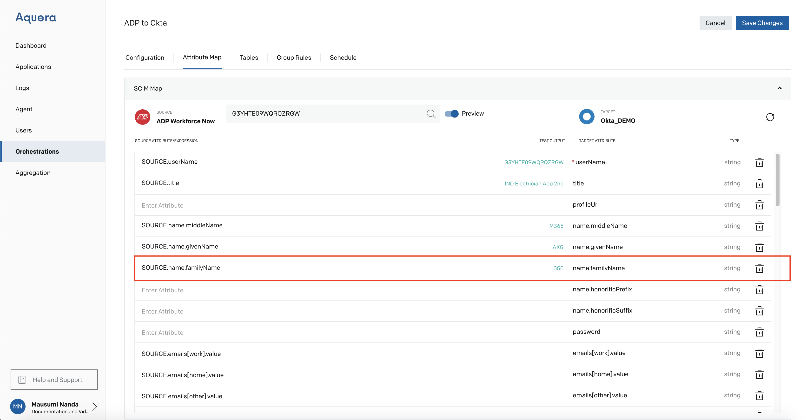
Choose the Attribute that is mapped
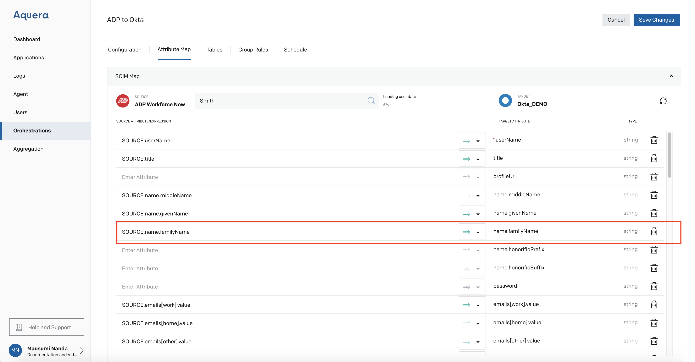
Click on the dropdown next to the Arrow mark

You get the following dropdown

Select the first dropdown (Map on Create and Update)
Then Click Save Changes
The ADP to Okta Attribute mapping is Successful
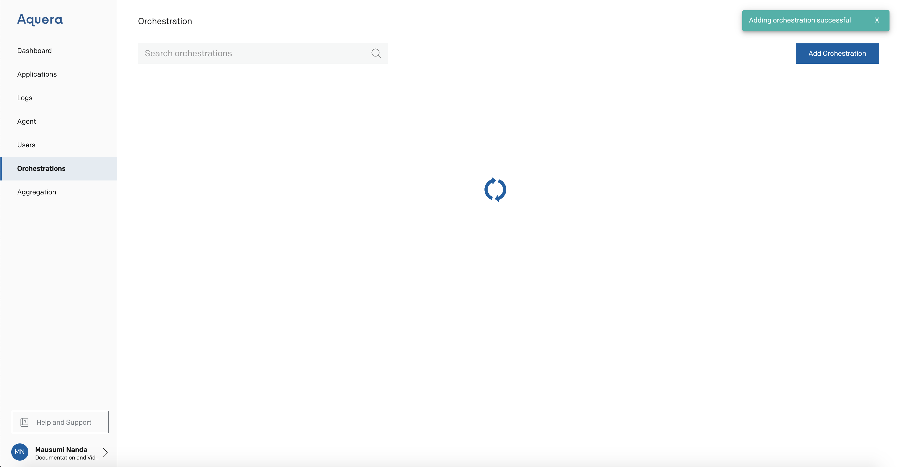
Steps to pull the Data from the ADP Application
Goto ADP Application that you created prior to the Orchestration
Goto the Data Tab
Copy the Field for userID (marked as True)
Use this userID in the above section
BambooHR Event Listener to Active Directory by Scripts
Event Listener Orchestration Process
What is Event Listener
Event Listener is a type of Orchestration where we can make a change to the Target (Active Directory) via a change to the Source (BambooHR)
How to Set Up the Webhook
Click on Orchestration -> Add Orchestration
Enter a Name for the Orchestration (here it is BambooHR to Active Directory)
Click on BambooHR Event Listener
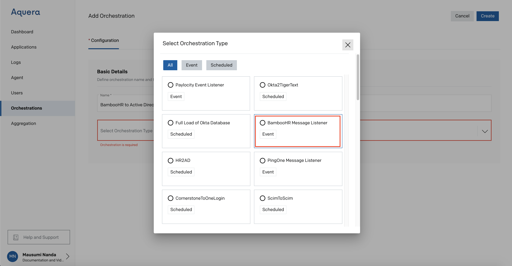
You get the following screen

Select the dropdown next to BambooHR Event Listener
Then Select the Next Main Tab - Event
Click on BambooHRWebHooks

You get the following screen

Please Enter Active Directory in the Application
Then enter the Script

Then Save Changes
The Orchestration is Successfully saved

Event Detail
The Event Details are displayed, Use this in the below section

The Basic Details are hereby displayed
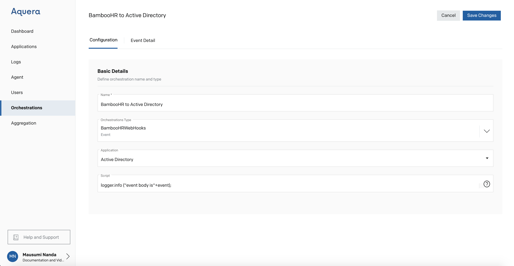
Source Configuration
Login to the BambooHR portal using your Admin Credentials
You get the following screen, Click on Settings

Click on Webhooks
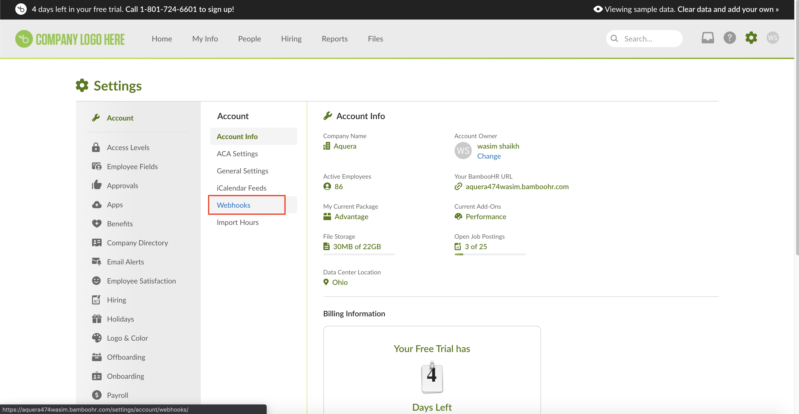
Click on Add Webhook
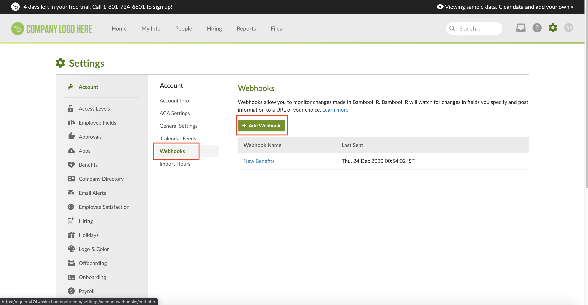
Enter a Name for your Webhook, Here it is BambooHR to Active Directory
From the dropdown under 'What fields do you want to monitor'
Please Select the fields as per your requirement like First Name, Last Name, Job Title, and Employee #
Select the very same fields from the dropdown under 'What fields do you want to post'
Hence both the fields should be the same in the dropdown

Select 'Json' from the options placed under 'What format should the data be in'
Copy URL from the Aquera's 'Event Detail' page and paste the same in the specified box on the BambooHR page. At the end of the URL, add ?key=
User can select the time limit. Here it is selected as '1 time at every 60 seconds'.

Then Click Save
The User can see the newly created Webhook
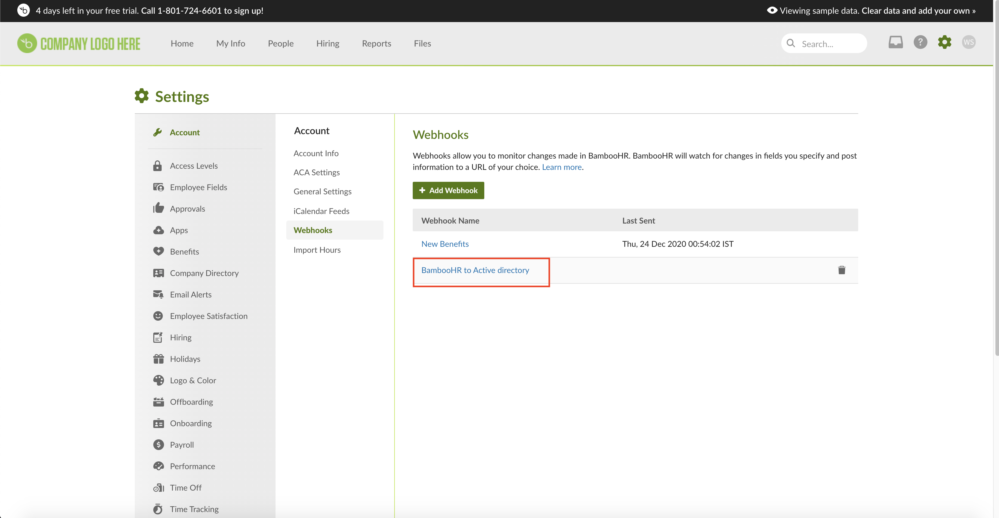
Click on People, User can update the data here, in BambooHR. It will be reflected automatically on the Active Directory Instance.
You have to send an email to support@bamboohr.com
to enable the Webhooks in BambooHR
Provisioning TigerConnect from Okta
Create a Custom App in Okta
Login to Okta using your credentials
Goto Admin
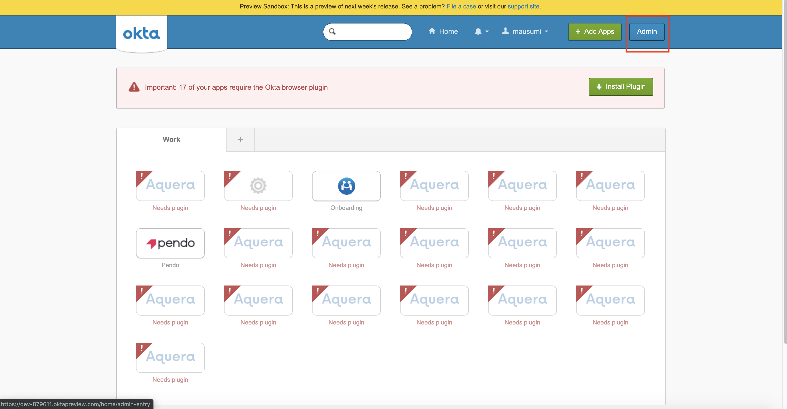
Goto Add Applications

Click on Create a New App
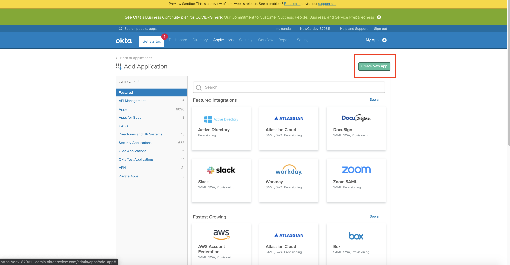
Create a New Application Integration
The Platform is Web
The Sign-In Method is Secure Web Authentication (SWA)
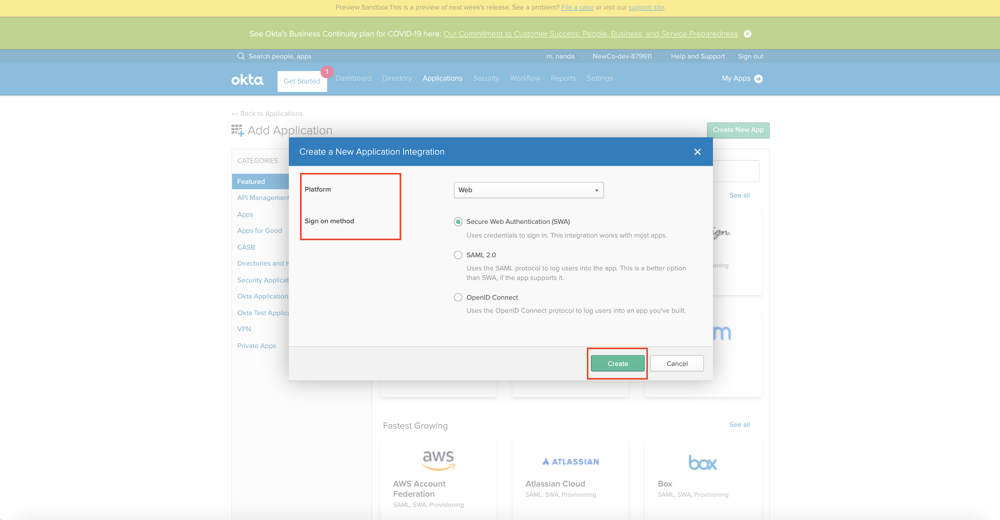
Then Click on Create
Enter an App Name (TigerConnect_DEMO12) and App Login Page URL
Then Click Finish
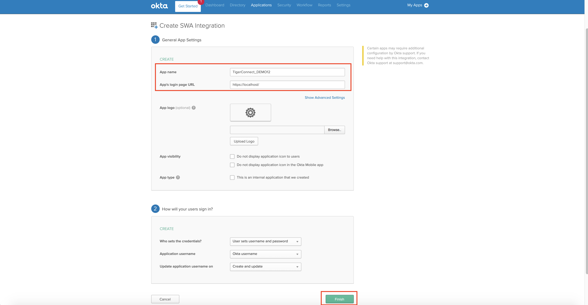
You get the following screen

Goto Directory -> Profile Editor
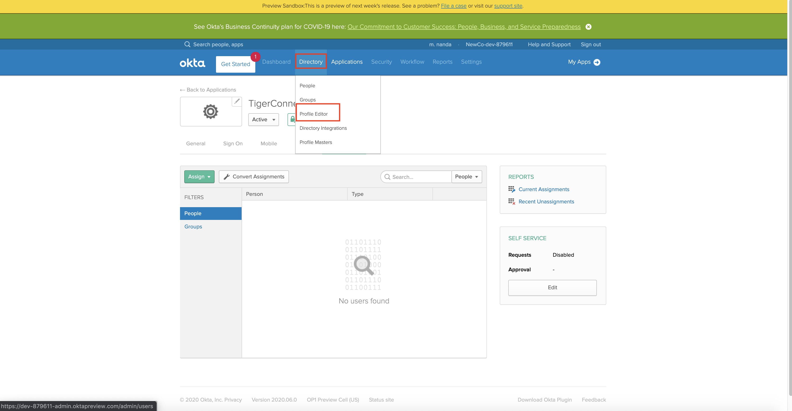
Search the TigerConnect_DEMO12 Custom app that you just Created

Then Goto Profile
Click on Add Attribute

Then Add a Custom Value (displayName)
Enter the values as stated in the below screenshot
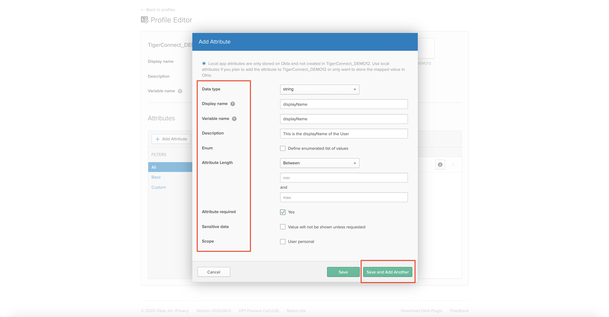
Then Save and Add Another
To Add Another Custom Value (Roles)
Enter the values as stated in the below screenshot
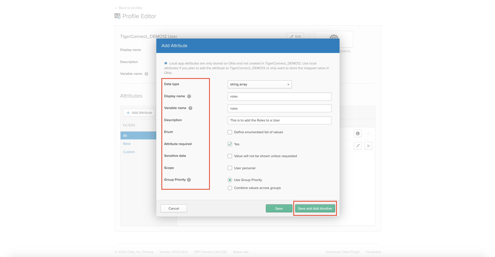
In the very same manner add the rest of the Attribute Mappings
Add all the values as displayed in the table below
| Display Name | Variable name | Data Type | Attribute type |
| Username | userName | string | Base |
| displayName | displayName | string | Custom |
| string | Custom | ||
| givenName | givenName | string | Custom |
| familyName | familyName | string | Custom |
| primaryMobile | primaryMobile | string | Custom |
| roles | roles | string | Custom |
| department | department | string | Custom |

Aquera Admin UI : Connector Configuration (Okta)

On the Add Application page, you will see the following fields:
- Display Name: Enter the display name for the application.
- Description: Enter a description for the application.
- Pick your Protocol: Select the protocol as SCIM, this will populate the fields in the Schema accordingly.
- Copy this URL: Copy the URL and paste it at the time of provisioning in the Identity Service Provider.
- Tenant: Here the Tenant is aquera.okta.com.
- Aquera Tenant Attributes: The various Aquera tenant Attributes are described below.
- Authentication: Bearer Token is used.
Click on Create to Add Okta Application.
Tenant
The Tenant for Okta is the name of your organization + domain. The domain will be either okta or oktapreview. For example, if you normally reach your Okta dashboard with https://companyx.okta.com, then your tenant would be 'companyx.okta.com'. If you want to access your test instance then it would be 'companyx.oktapreview.com'.
Aquera Tenant Attributes (Optional)
The Aquera Tenant Attributes are described below.
populateEntitlement - This checkbox is checked to Update specific entitlements by adding or removing AWS Role Groups in the Member Of group property
Support Temporary Password - Name of the Group that Allows temporary password. This is needed only when Support for Temporary password is set.
Manage Groups from User Object - By default the "Manage Groups From User Object” is enabled. It is a checkbox that is set to true on checking it and is set to false when it is not checked.
- If the Checkbox is checked, the Group Management operations will be enabled for the Users.
- If the Checkbox is not checked, the Group Management operations will not be enabled for the Users.
Exclude Groups in Users - This Checkbox is checked if the Okta Connector needs to exclude the Groups Management functionality.
Name of Manager linkObject - Provide linked Object definition name to be used for manager and subordinates. Here the value is manager.
Authentication
Authorization is of type Bearer. The Bearer token used will be the API Token from your Okta Tenant. In the Okta Administrative Console, navigate to the Security->API->Tokens and create a new API Token to be used from this service.
Aquera Admin UI : Connector Configuration (TigerConnect)
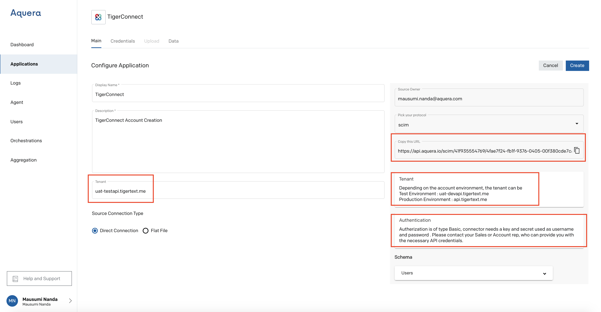
On the Add Application page, you will see the following fields:
- Display Name: Enter the display name for the application
- Description: Enter a description for the application
- Pick your Protocol: Select the protocol as SCIM, this will populate the fields in the Schema accordingly.
- Copy this URL: Copy the URL and paste it at the time of provisioning in the Identity Service Provider.
-
Tenant: Depending on the account environment, the tenant can be
Test Environment : uat-devapi.tigertext.me
Production Environment : api.tigertext.me - Authentication: Authorization is of type Basic, the connector needs a key and secret used as username and password. Please contact your Sales or Account rep, who can provide you with the necessary API credentials.
- Schema: Schema consists of the SCIM Attributes of Users.
Click on Create, to Add the TigerConnect Application.
Tenant
Depending on the account environment, the tenant can be
Test Environment : uat-devapi.tigertext.me
Production Environment : api.tigertext.me
Authentication
Authorization is of type Basic, the connector needs a key and secret used as username and password. Please contact your Sales or Account rep, who can provide you with the necessary API credentials.
Orchestration
Add Orchestration Okta to TigerConnect
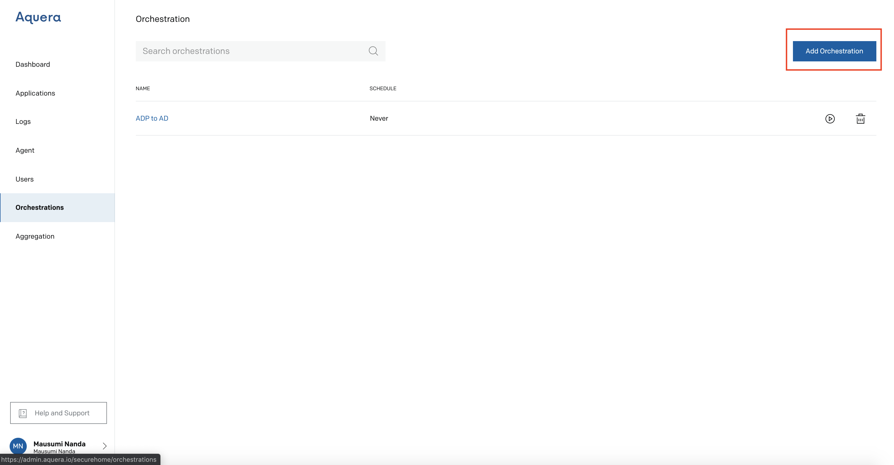
In the Configuration Section, Create the Orchestration (Okta_DEMO to TigerConnect_DEMO) as shown below
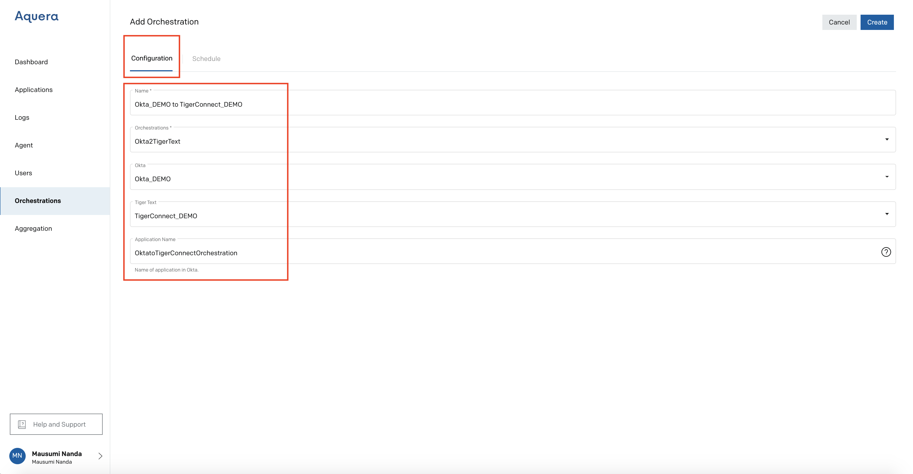
Then Click on Create
Then Click on the Orchestration
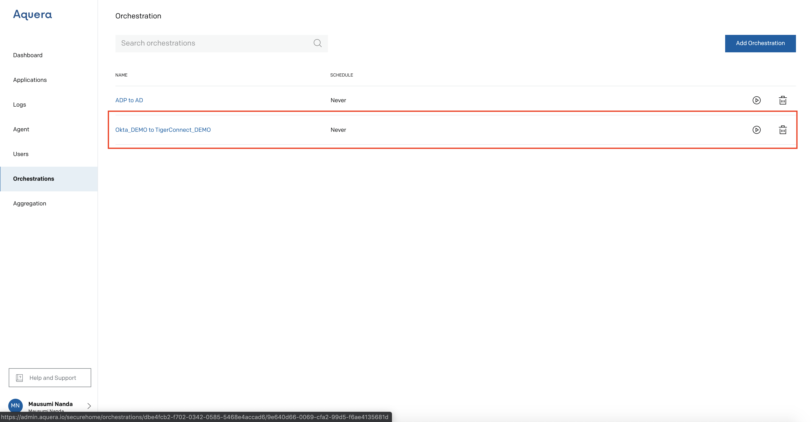
Then Click on Execute (the small triangle) to Start the Orchestration
You can Schedule the Orchestration (never, every 20 minutes, every 40 minutes, every 1 hour, every 2 hours)
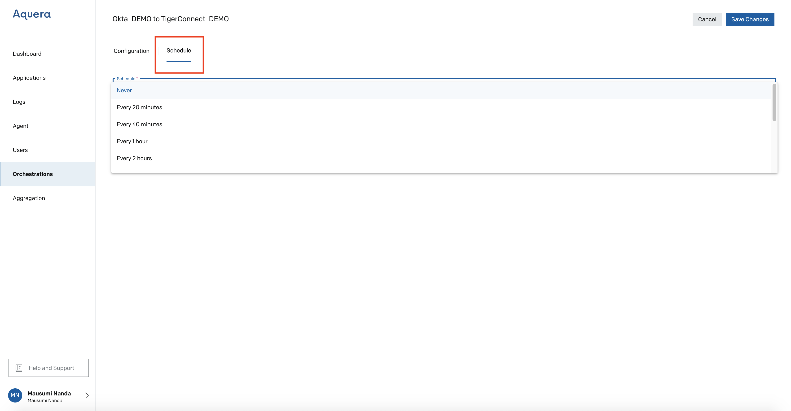
Then Save Changes
You can View the Orchestration Logs in the Logs Section

Reusable Parts of Orchestration-Managing Groups, Attribute Maps, Use of Tables
This guide consists of the following sections
1. Group Management
a. Use Basic Condition
b. Use Expressions
c. Functions
2. Attribute Maps
a. Attribute Mapping
3. Use of Tables
Group Management
Use Basic Condition
When the user checked the Enable Group Management checkbox in the Configuration section, Group Rules can be formed for the group being created.
Users can define their own rules for the groups with regard to updating the data.
If the user enabled the Group Management but not framed any Group Rules, the changes made at the source will automatically get reflected at the target.

Use Expression
if the group expression is undefined then the group list will not be modified during the PUT or POST.
If you would like to remove a user from all of their groups then the expression must evaluate to the empty list [].
The managed group list provides a list of groups that the Orchestration will manage.
Only these groups will be modified by the orchestration.
This allows the target to have groups that are managed in the target, for example, Active Directory security groups managed by Active Directory and groups managed by the orchestration.
The list of groups will be the displayName of each group.
The groupDisplays must be unique in the target directory.
If the group name is redundant in the target then that group cannot be managed as the orchestration will not know which group of the two to add the user.
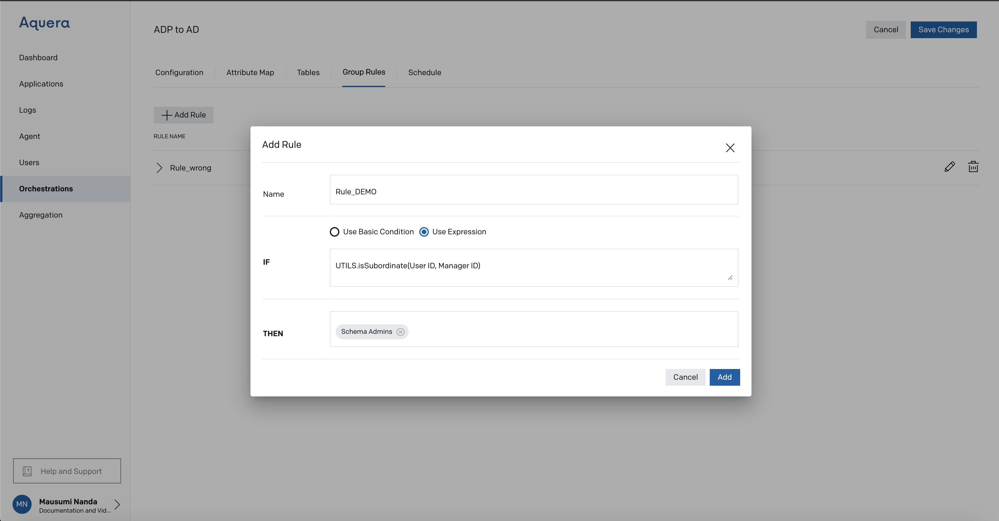
Function
UTILS.isSubordinate(User ID, Manager ID) - This function is used to determine if a user is within the reporting hierarchy of a manager.
For example, if the user is within the organization in the role of a Developer, then this function can be used to determine the Role. This function takes the user.id and the manager user.id and will look up the management hierarchy to see if the user's immediate manager is the manager.id, if it is it returns true.
If the user has a manager and it is not the one being searched for it will do the same operation on the user's manager. This continues until the manager is found or it reaches a user that does not have a manager. If the user does not have a manager, then it will return false.
Attribute Maps
Attribute mapping is done between source and target. The mapping simplifies the process of executing the CRUD operations on the attributes, as the changes made to the source attribute will automatically get reflected at the target once the mapping is completed and the changes are saved.
Attribute Mapping
Please enter an userID to Preview their mappings
Enter a valid userID from the ADP Application (Data Section), for example G3YHTE09WQRQZRGW
Then Click Search
You get a Preview Button
Please turn it On
Mappings Preview is shown
Choose the Attribute that is mapped
Click on the dropdown next to the Arrow mark
You get the following dropdown
Select the first dropdown (Map on Create and Update)
Then Click Save Changes
The ADP to Okta Attribute mapping is Successful
Steps to pull the Data from the ADP Application
Goto ADP Application that you created prior to the Orchestration
Goto the Data Tab
Copy the Field for userID (marked as True)
Use of Tables
Tables provide a mechanism to store name-value pairs in the Orchestration. These tables can be used to convert attributes from the source application to the target application. These lookup tables can be used to translate the format of state information.
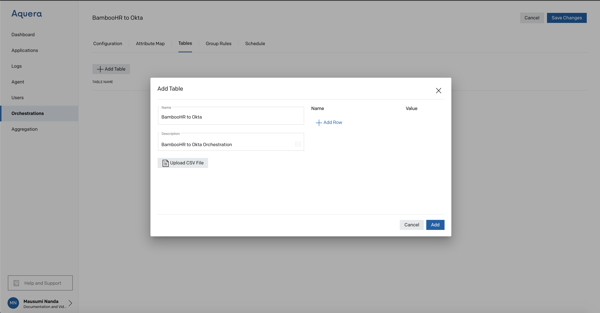
Then Add Row
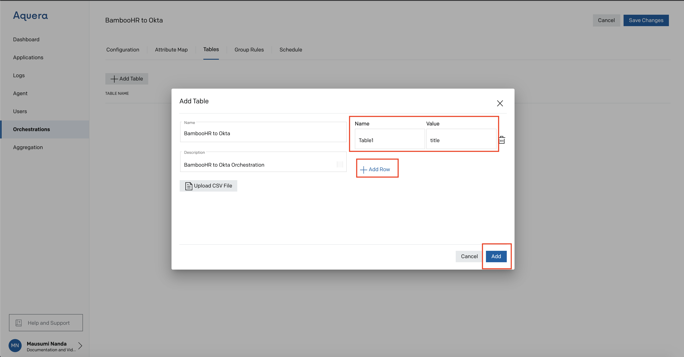
Click on Add the Table
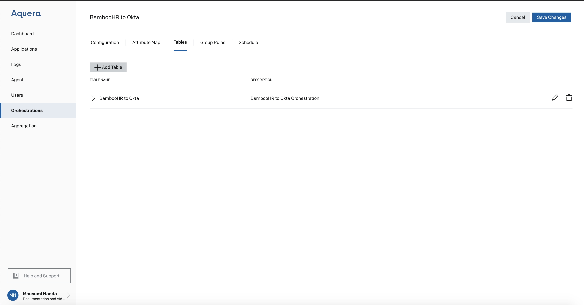
Goto Attribute Map
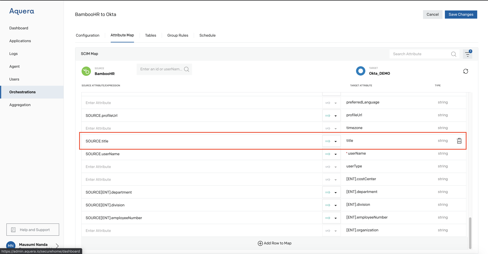
Map on Create and Update

Click on Save Changes
Then search a valid UserID from BambooHR
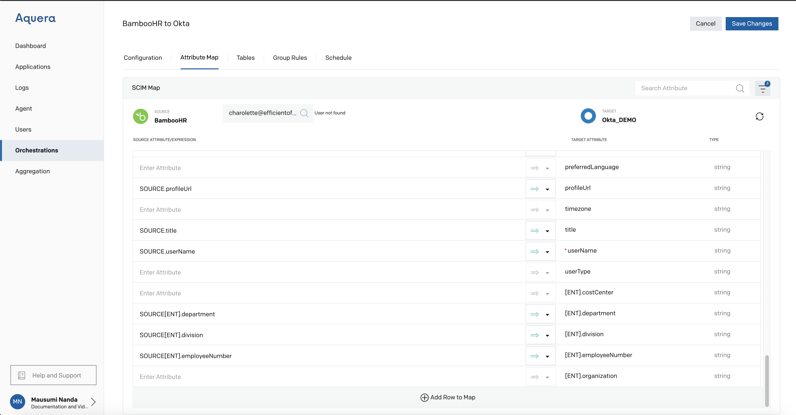
Check the 'Preview' on to see the search results.
Custom Scripts
The Custom Script Orchestration is a scheduled orchestration that can access any number of applications. The script is based on javascript so all functions and language constructs are available in the script.
Each application has a name that can be used to access the actions on that application. The actions available are as follows:
Actions
application_name.importAllUsers() -- This will return all of the Users in the application. This will be an array of user objects.
application_name.importAllUsersFromGroup(string group | object group) -- This will return an array of all users that are assigned to this group in the application.
application_name.importUpdatedUsers(integer count, string units) -- This will return an array of all users that have been updated in the last count units. The units can be year, month, day, hour, minute, second.
application_name.addUserToGroup(string group | object group, string id | string userName | object user) -- This action will add the specified user to the specified group.
application_name.removeUserFromGroup(string group | object group, string id | string userName | object user) -- This action will remove the specified user from the specified group.
application_name.findUser(string id | string userName | object user) -- This will return a user if it can be found in the application. Or if no user is found then it will return undefined.
application_name.createUser(object user) -- this will create a new user in the application. It will return the user object that was created including the id.
application_name.updateUser(string id, object user || object user) -- update an existing user by specifying and id and user object or just a user object with an id attribute.
application_name.deleteUser(string id | string userName | object user) -- delete a user in the application.
application_name.setUserPassword(string id | string userName | object user, string password) -- set the password of the user in the application.
application_name.activateUser(string id | string userName | object user) -- set the active = true to activate the user in the application.
application_name.deactivateUser(string id | string userName | object user) -- set the active = false to deactivate the user in the application.
Functions
sendEmail(string to, string subject, string body) -- will send an email to the specified to with a subject and body.
generatePassword( empty | int length) -- creates a random password of specified length.
findType(array object | string type) -- this will look through the array of objects that have an attribute named type and will return the first object that has that specified type.
log(string details) -- write log information in the resulting orchestration run.
SCIM Objects
User
The user object contains 3 sections core, enterprise, and extended.
The core attributes are accessed directly at the top level of the object as in user.id, user.userName, or user.name.givenName.
The enterprise object can be accessed by using the built in variable ENT (abbreviated for enterprise). Examples of this are user[ENT].manager.value, user[ENT].organization, user[ENT].department.
The extended object can be accessed by using the built in variable IAN (abbreviated for integrated application network). For example user[IAN].terminationDate, user[IAN].lastLoginDate.
HR Onboarding Bridge
The HR Onboarding Bridge Orchestration provides a one way synchronization from any Human Resources Management System to a directory or application. The Orchestration can be scheduled to run on a frequency specified in the schedule section of the configuration.
Orchestration Parameters
source_scim
This parameter to the orchestration defines the SOURCE system that the bridge will read information from. This source must be configured as an application in the applications list for your tenant. The application must have it's credential configured so that the orchestration can communicate to the source HR system to retrieve all of the records to be synchronized to the destination.
target_scim
This parameter to the orchestration defines the DESTINATION system that the bridge will write users to. This destination must be configured as an application in the applications list for your tenant. The application must have it's credential configured so that the orchestration can communicate to the target directory or application to create/update/delete users.
report_only
This parameter when true directs the orchestration to run in read only mode to generate a report that can be examined to ensure that the users will be created/updated/deleted in the destination directory or application correctly.
map
This parameter is used to create a map of the user in the destination directory or application from expressions from the source system. These expressions allow you to specify how each attribute will populated.
active : this attribute determines the state of the user in the destination application or directory. The most basic form will be an exact copy active = SOURCE.active. But you can support other use cases:
Employee Moving to Contractor: When the title field in the Source HR is set to CONSULTANT then the user in the destitination will not be deactivated even after they are terminated. active = SOURCE.title == 'CONSULTANT' || SOURCE.active will make this possible.
Group Management
if the group expression is undefined then the group list will not be modified during the PUT or POST. If you would like to remove a user from all of their groups then the expression must evaluate to the empty list [].
The managed group list provides a list of groups that the Orchestration will manage. Only these groups will be modified by the orchestration. This allows the target to have groups that are managed in the target, for example AD security groups managed by AD and groups managed by the orchestration.
The list of groups will be the displayName of each group.
The groupDisplays must be unique in the target directory. If the group name is redundant in the target then that group cannot be managed as the orchestration will not know which group of the two to add the user to.
Email Templates
The email templates allow for customization of the onboarding and off boarding email messages that are sent to the manager and/or administrator. These templates allow for substitution of attribute values of the corresponding user in the email message itself by utilizing {{attribute_name}}.
For example to include an IAN attribute as part of the response you will need to include {{[IAN].Location}} for example.